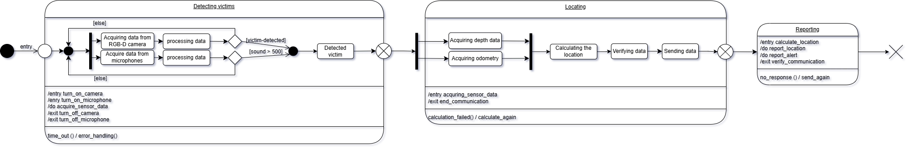

Victim Detection
{kind=link}
Diagram Overview
Behavioral Diagram Type: UML State Machine Diagram
This is appropriate for modeling the state-based behavior of a system component that changes states based on events, conditions, or actions. The state machine diagram was chosen for modeling this component because the system’s behavior is fundamentally state-driven. In the victim detection task, the robot transitions between a series of well-defined operational modes ? such as Detecting Victims, Locating, and Reporting ? where each mode has specific activities, entry and exit actions, and conditions that trigger transitions to the next state.
Description of Components:
The state machine diagram contains two composite states with substates and one simple state. It begins with an initial pseudostate and ends with a terminate pseudostate.
Process Overview:
Victim detection using audio and visual sensors
Location estimation using depth and odometry data
Reporting the detected victim’s location and detection alert
State Details:
State 1: Detecting Victims
Substates:
Parallel processes: - Acquire data from RGB-D camera → Process data - Acquire data from microphones → Process data
Transition to Next State: Occurs if a victim is detected or sound level exceeds 500. Transitions to the Detected victim state.
Activities:
On entry: Execute
turn_on_cameraandturn_on_microphoneDuring state: Perform
acquire_sensor_dataOn exit: Call
turn_off_cameraandturn_off_microphone
Transitions:
If
time_out()event occurs: Triggererror_handling()function
State 2: Locating
Substates:
Data Collection: - Acquire depth data - Acquire odometry data
Location Estimation: - Calculate location - Verify data - Send data
Activities:
On entry: Execute
acquiring_sensor_dataOn exit: Call
end_communication
Transitions:
If
calculation_failed()occurs: Performcalculate_again
State 3: Reporting
Activities:
On entry: Execute
calculate_locationDuring state: Perform
report_locationandreport_alertOn exit: Call
verify_communication
Transitions:
If
no_response()event occurs: Executesend_again
KPIs |
Metric |
Success Criteria |
|---|---|---|
Victim Detection Accuracy (Visual) |
Precision/recall in detecting humans in RGB-D images |
≥90% accuracy in test set |
Victim Detection Accuracy (Audio) |
Correctly detect sounds |
≥85% true positive rate on labeled audio samples |
False Positive Rate |
Percentage of false alerts (e.g., non-human objects) |
<5% under standard conditions |
Location Estimation Accuracy |
Deviation between reported and actual victim location |
≤0.5m deviation |
Alert Latency |
Time between detection and message publication |
≤500ms from detection to message receipt |
code
- class scripts.victim_detection.VictimDetector[source]
Bases:
objectA ROS-based victim detection class using RGB images, depth data, audio, and odometry.
- Subscribes to:
/xtion/rgb/image_raw: RGB camera feed.
/xtion/depth/image_raw: Depth image feed.
/mobile_base_controller/odom: Robot odometry.
/audio: Audio data.
- Publishes:
/victim_location: Estimated location of detected victim.
/victim_alert: Alert message when a victim is detected.
- audio_callback(audio_msg)[source]
Callback for audio messages.
- Parameters:
audio_msg (audio_common_msgs.msg.AudioData) – AudioData message containing sound samples.
- depth_callback(depth_msg)[source]
Callback for depth image messages.
- Parameters:
depth_msg (sensor_msgs.msg.Image) – Depth image.
- detect_victim_audio(audio_msg, threshold=500)[source]
Detects a victim using audio data based on volume threshold.
- Parameters:
audio_msg (audio_common_msgs.msg.AudioData) – AudioData message.
threshold (int) – Volume threshold for detection.
- Returns:
True if volume exceeds threshold, otherwise False.
- Return type:
bool
- detect_victim_rgb(rgb_msg)[source]
Detects a victim using RGB image data by looking for red color blobs.
- Parameters:
rgb_msg (sensor_msgs.msg.Image) – Image message with RGB data.
- Returns:
True if a victim is detected, otherwise False.
- Return type:
bool